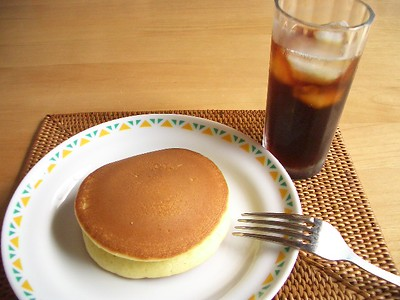

Japanese Hot Cake

The hottest cakes you've ever seen!
Ingredients
- 150g cake flour
- 2 teaspoons of baking powder
- 45g sugar
- 1 egg
- 1/2 cup of milk
- 1 tablespoon of oil
- 1 teaspoon of vanilla extract
- Oil
- Butter
- Honey or Maple Syrup
Steps
- In a bowl, whisk cake flour, baking powder and sugar together. In another bowl, mix egg, milk, oil and vanilla well. Pour egg mixture into dry ingredients and whisk until smooth;
- Heat a frying pan at medium heat until hot, and oil lightly with paper towel. Then cool a pan resting on a wet towel for a couple of seconds, and put back on the cooker;
- Pour a ladle full of the batter onto the pan. Cook until bubbles come up and the surface dries a little, about 3 minutes. Turn over and cook for a couple of minutes;
- Serve with butter and syrup.
Home